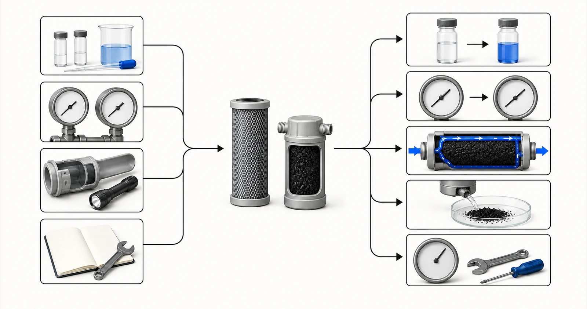

Direct answer
Carbon-filter replacement should be triggered by an approved service basis, not one universal number of months. Relevant signals can include target-compound breakthrough, loss of an approved sensory endpoint, treated volume, pressure loss, flow change, media condition, sanitation events or the verified instructions for a certified finished product. Troubleshooting begins by separating adsorption exhaustion from hydraulic blockage, channeling, bypass, fines, biological growth, sampling error and upstream water changes. Yuchen Water can review the water report, operating history, cartridge or vessel details and monitoring records to support a material and replacement direction, but an exact service interval requires evidence for the real water, flow and construction.
Start with the buyer's problem
A complaint such as odor returning can indicate breakthrough, but it can also result from a new source-water event, downstream contamination, bypass or a sampling problem. Low flow may indicate blockage rather than exhausted adsorption capacity. Black particles may come from insufficient initial flushing, damaged retention components or bed disturbance. Treating every symptom as the same failure wastes cartridges and can leave the real system risk unresolved.
The operating record is therefore part of the product evidence. Record installation date, media or cartridge identity, lot where available, initial flush, cumulative or estimated treated volume, average and peak flow, pressure before and after the stage, analytical results, sanitation and unusual source events. A useful replacement program converts these records into an action rule and keeps spare materials available before the trigger is reached.

- Breakthrough or source-water change
- Pressure-drop restriction
- Bypass or flow-path problem
- Carbon fines or retention damage
- Stagnation or sanitation issue
Conceptual illustration. Not test results, product certification or an engineering drawing.
What report and operating data are required
Send both current water data and the failure history. Photos can support a construction review, but they do not replace chemistry, flow, pressure and sampling information.
- source-water report and any change since the carbon was installed
- target compound or endpoint and before/after analytical results
- installation date, cartridge or media identity, lot and treated volume if known
- average and peak flow, daily runtime and periods of stagnation
- inlet and outlet pressure or differential-pressure trend
- initial flushing, sanitation, backwash and other maintenance records
- upstream sediment condition and downstream equipment symptoms
- sampling locations, method, timing and replacement rule currently used
A report should be recent enough to represent the proposed source and should identify the sample date and location. If the water changes by season, production batch or operating state, provide the range rather than one convenient result. State the required treated-water objective separately from the current analysis. When a value is unknown, mark it as unknown; a visible gap is safer than a guessed number.
Hydraulic information belongs beside chemistry. Average flow alone can hide short peak conditions, intermittent duty and long stagnation. Confirm daily runtime, peak demand, available pressure, allowable pressure loss, equipment dimensions and who will monitor and replace the carbon. These details decide whether an otherwise plausible media can be used in a serviceable system.
Selection logic
If the target compound appears after carbon while flow and pressure remain normal, investigate breakthrough, source loading and sampling first. Confirm that the inlet concentration and competing constituents have not changed, that samples represent the correct ports and that the analytical method is suitable. Compare the result with the agreed action level; do not wait for a visible or sensory change when the target cannot be detected reliably by users.
If differential pressure rises or flow falls, inspect upstream solids control, cartridge blockage, bed compaction and valve position. Replacing adsorption media without correcting solids loading can reproduce the failure quickly. If pressure is unusually low with poor treatment, check bypass, seals, internal distributors, channeling or missing media. Vessel inspection and safe isolation procedures must follow the equipment design.
If fines appear, review the carbon particle specification, retention screens, installation damage, transport, flushing and backwash conditions. If odor or microbiological concerns follow stagnation, review sanitation, temperature, downtime and downstream contamination. Activated carbon is not a disinfectant program, and an exhausted or poorly maintained stage should not be left in service merely because pressure remains acceptable.
Pretreatment, equipment and operating context
A replacement plan should state the normal trigger, early-warning result, maximum allowed service limit if supported, responsible person and action when data are missing. Industrial lead-lag beds may use monitoring and position rotation, while cartridge programs may use treated volume, verified instructions and periodic testing. The same interval should not be copied between sites that have different water quality and demand.
After changeout, document the new media or cartridge, flush or commission it according to the approved procedure, restore the sampling baseline and confirm pressure and water quality. Repeated early failure is evidence to revisit the treatment train, not simply shorten the calendar. Yuchen Water can support replacement material supply, compatibility checks and related equipment troubleshooting from the submitted records.
Common mistakes
- Using one replacement interval for every source water and flow
- Diagnosing adsorption exhaustion from pressure loss alone
- Replacing carbon without checking upstream solids or system bypass
- Ignoring stagnation, sanitation and biological conditions
- Failing to record the installed lot, treated volume and before/after samples
Evidence and service boundary
No page or quotation should promise a service life without defining the water, target, media, construction, flow and endpoint. A manufacturer's verified instruction for a finished product should be followed for that product; it is not automatically transferable to an OEM variation. Industrial intervals should be supported by monitoring, relevant evidence or qualified design assumptions.
The technical review can identify likely failure modes, missing data and replacement options, but remote review cannot substitute for safe site inspection. The operator remains responsible for isolation, handling, sanitation, sampling and return to service. Yuchen Water's scope is material supply and equipment technical support based on the information received.
Yuchen Water reviews the target and evidence first, then identifies the appropriate carbon format and material questions, supporting pretreatment and equipment needs, and the documents or tests still required. The output can be a preliminary direction, a request for missing information, or a supportable material and equipment recommendation. A recommendation is not released simply because a buyer supplied a product name.
After supply, technical support can cover document confirmation, installation and flushing questions, remote commissioning guidance, monitoring points and replacement planning within the agreed scope. Actual performance still depends on the approved material, complete equipment, source water, installation, operation and maintenance. Published guidance cannot replace the project review.
No final material, capacity, service life, removal percentage or project result is promised before the report, construction, evidence and operating conditions are reviewed.
Official technical sources
These sources explain treatment principles or certification boundaries. They do not certify Yuchen Water products and do not replace project-specific evidence.
Related activated-carbon guidance
Continue through the knowledge cluster, review selected sample evidence only within its stated limits, compare product formats, or submit the report for a technical review.